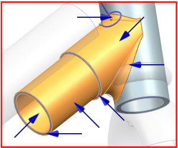
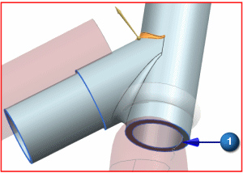
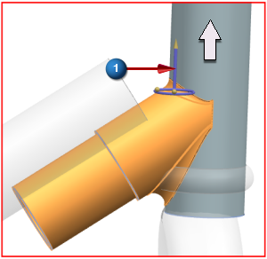
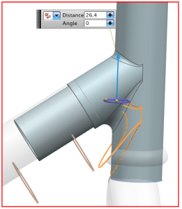
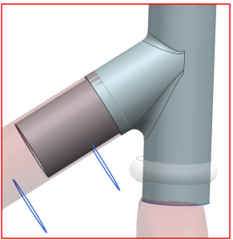

Align the headset with the frame
In this step, you will reposition the angled blue cylinder on the headset to align with the red frame.
The Move Face dialog box is still open from the previous step.
-
 the seven surfaces shown in the following figure, including the two circular end faces
the seven surfaces shown in the following figure, including the two circular end faces

 Vector Dialog (Specify Distance Vector)
Vector Dialog (Specify Distance Vector)
Type
Face/Plane Normal

 the bottom face of the headset
the bottom face of the headset

-
 Reverse Direction (to reverse the vector; the arrow should be pointing up)
Reverse Direction (to reverse the vector; the arrow should be pointing up)
-
OK
Vector dialog box
-
 drag the Distance arrowhead upward 26.4 mm
drag the Distance arrowhead upward 26.4 mm

Tip
You can drag the surfaces close to the target location and then type the fractional value in the Distance box. Press Enter after typing the value.

Apply

Leave the Move Face dialog open for the next step.